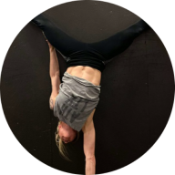

|  | Åsa AnkarlingFamily Therapist within Borås Stad.
Sociologist with many years of experience in Psychosocial Treatment Work |
| Dates | Work |
|---|---|
| 2007-2012 | School Counselor, Borås Stad |
| 2017-2018 | Health Coach & Project and Operations Coordinator, Studieförbundet Vuxenskolan | 2017-2018 | Lecturer in Health Related Topics, Studieförbundet Vuxenskolan |
| 2017-2019 | Social Worker, Borås Stad |
| Personal Development/Coaching |
| Group Development |
| Behaviour and Motivation |
| Communication |
| Project Management and Lecturing |
| KBT (Cognitive Behaviour Training) and ACT (Acceptance and Commitment Training) |
| COS (Circel of Security) |
| Systems Theory |
| MI (Motivational Interviewing) |
| MBSR (Mindfulness Based Stress Reduction) |
| Writing |
| General language knowledge/Linguistics |
| Photograph |